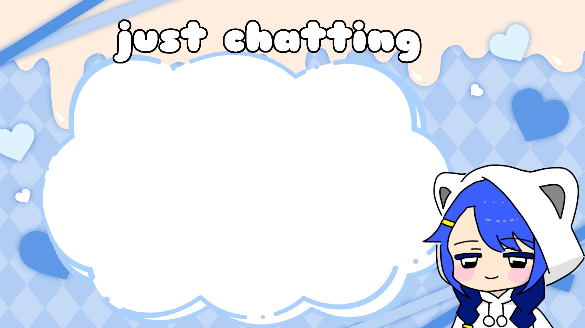

it's just a meme coin on solana. but...
「Instead of superchats, send NYANCO. Instead of gifts, give NYANCO.」
We will build that kind of world.
.
NYANCO is a coin on solana.
No financial utility, no promises, no guarantees.
Don't use funds you can't afford to lose.
This meme coin is not based on any existing meme.
Just kawaii feelings — and an original character.
Token Address
PASTE_TOKEN_ADDRESS_HERE

you can add this messages system like her↑!, not yet, maybe in the future.
You will be able to add this support system to your own stream and receive NYANCO as messages and appreciation.
Not available yet. Coming someday.
anon: 萌えは義務
supporter: NYANCO送った！
moe_fan: I'm here!
moe_fan: 配信待ってた
moe_fan: 配信待ってた